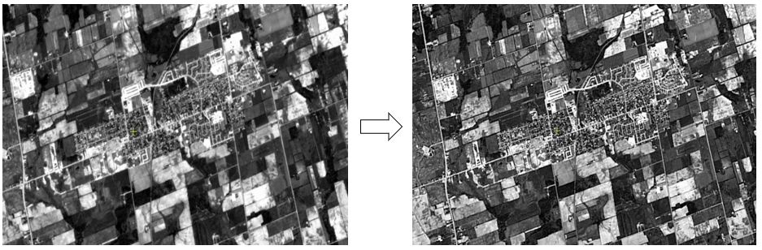
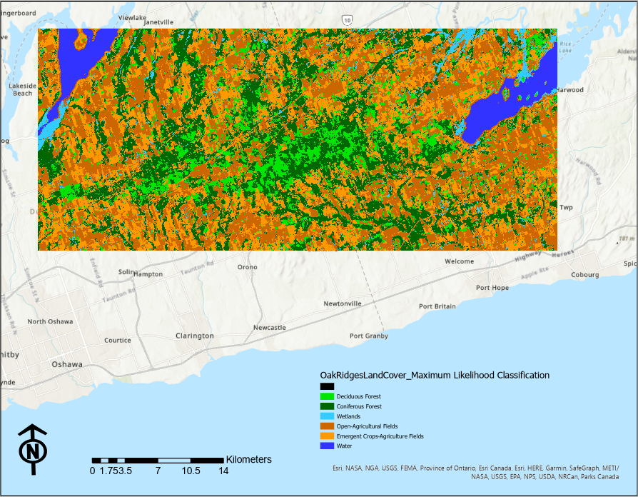
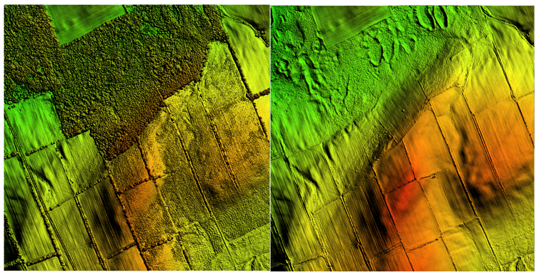

Introduction
Throughout the two semesters of the GIS program, I have completed about 11 projects related to Remote Sensing which included learnings about Automated and Semi-Automated Image Geometric Correction, High and Low Pass Image Filtering, Pan-Sharpening, Supervised & Unsupervised Multi-Spectral Landcover Classification, Geospatial Modeling Using Image-Object Based eCognition Software, Exploring Optical and RADAR imageries for Landcover Classification, Orthorectification and DSM (Digital Surface Model) Extraction from Legacy Aerial Photography, Generating a DTM (Digital Terrain Model) from contour elevation base data, Using a DTM to generate a Shaded Relief Image and Modelling with LiDAR and Photogrammetric derived Point Clouds.
Pan-Sharpening of Spatial Imagery
The picture below has 2 spatial images from which left one is the original SPOT-2 (Satellite Pour l’Observation de la Terre) Panchromatic Image acquired June 4, 1985 of Stoufville area in Canada and the right one is the same image integrated with 5 by 5 edge sharpening high class filter. Edge enhancement filters are designed to emphasize the high spatial variability in an image. Sharpened image shows the effect of a image having high resolution than actually the image has because the features are seen to have highlighted and bounded.
Multi-Spectral Land Cover Classification
A simple map image attached below is the Landcover Classification map of Oak Ridges Moraine area in Ontario, Canada. To obtain this landcover map, Landsat 8 OLI satellite image captured April 14, 2017 (downloaded from USGS Earth Explorer) having 7 different bands and their spectral properties are used. Different band composites and other 2 seasons Landsat 8 images are used to classify the landcover classes based on spectral properties of pixels. The map has 6 landcover classes that are mainly observed in the area. In addition, I have also done object-based landcover classification with the help of Trimble eCognition Geospatial Modeling software.
LiDAR Derived Raster Products
Here are two digital elevation model images of Bailieboro area of Ontario in Canada presented in the form of shaded relief with Azimuth and elevation of 45˚ and 45 m respectively giving the shape factor z of 10. . Both are obtained from Ontario Classified Point Cloud (Lidar-Derived) dataset from Ontario Geohub during April-May 2017. The left image is the Digital Surface Model generated from the Ground Points of this LiDAR dataset (.lasd) file while the right image id the Digital Terrain Model generated from the 1st LiDAR Return Point clouds excluding the noise returns of the same LiDAR dataset.
